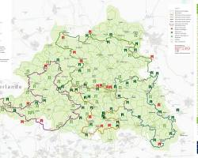
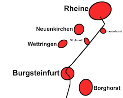
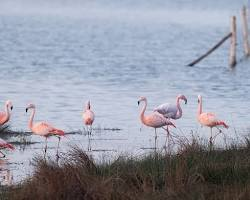
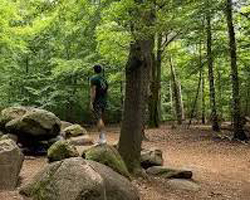

Click in any field below to hear the sentence read aloud.

Click in any field below to reveal a translation.
Das Münsterland ist ein ideales Reiseziel für einen Fahrradausflug. Die Region ist flach und bietet eine Vielzahl von Radwegen, die durch malerische Landschaften führen. Hier sind einige Vorschläge für Fahrradtouren im Münsterland: |
| Die 100-Schlösser-Route ist eine der bekanntesten Radtouren im Münsterland. Sie führt über 960 Kilometer durch die Region und verbindet mehr als 100 Schlösser, Burgen und Herrenhäuser |  |
| Die RadBahn Münsterland ist eine ehemalige Bahnstrecke, die heute als Radweg genutzt wird. Sie führt von Münster nach Rheine und ist 170 Kilometer lang |  |
| Die Flamingoroute führt entlang der Grenze zu den Niederlanden. Sie ist 450 Kilometer lang und führt durch eine abwechslungsreiche Landschaft mit Wäldern, Feldern und Seen |  |
| Die Sagenroute führt durch das nördliche Münsterland. Sie ist 214 Kilometer lang und führt zu den Schauplätzen von Sagen und Legenden |  |
Egal, für welche Route Sie sich entscheiden, im Münsterland erwartet Sie ein unvergessliches Rad-Erlebnis Vergessen Sie nicht, ausreichend Proviant und Getränke mitzunehmen, und denken Sie an wetterfeste Kleidung, da das Münsterland für seine wechselhaften Wetterbedingungen bekannt ist Zusätzlich zu den oben genannten Routen gibt es noch viele andere schöne Strecken im Münsterland zu entdecken. Hier sind einige hilfreiche Ressourcen, um die perfekte Route für Sie zu finden: |
No matter which route you choose, an unforgettable bike experience awaits you in the Münsterland.
Don't forget to take enough provisions and drinks with you, and think of weatherproof clothing because the Münsterland is known for its changeable weather conditions.
In addition to the routes mentioned above, there are many other beautiful routes to discover in the Münsterland. Here are some helpful resources to find the perfect route for you:
- The Münsterland tour planner
- Münsterland bike routes